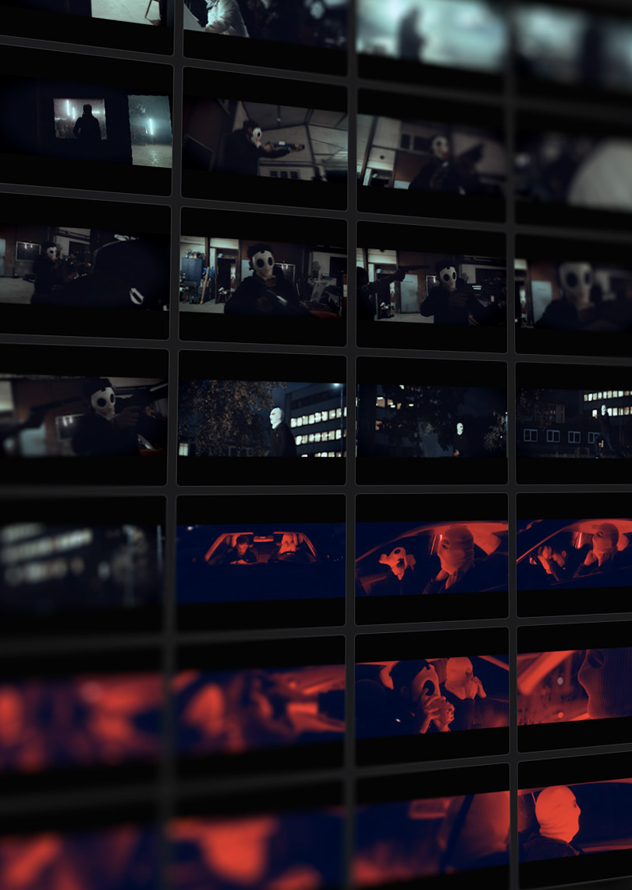
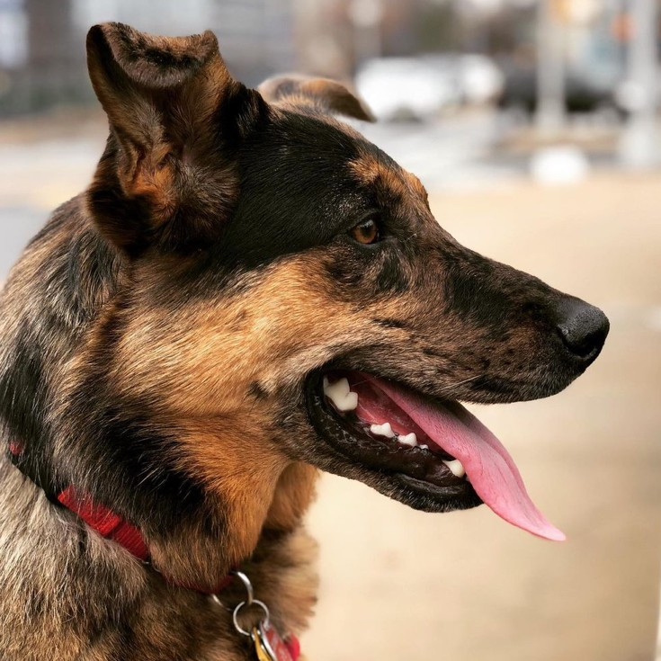

Ozu is a technology company built by and for creative workers that want to shape the future of media and entertainment in the age of artificial intelligence.
We aim to radically simplify film, television, and video production for professionals, creators, and fans.
Our hypothesis is that narrative data - the information about the cinematography, art direction, characters, arcs, relationships, and plots we love - is the missing link to enable a new world of magical applications and services.
Join us in building a narrative co-pilot to help people tell their stories.
Ozu Software
Your Narrative Co-Pilot, Revealing the Art and Design of Cinema and TV
Whether you’re a producer, video editor, cinematographer, showrunner, or fan - looking through video footage needs an upgrade. Ozu reinvents video search, organization, and collaboration by providing powerful video analysis and time-based tagging software designed for storytellers.
Creative
Color
Framing
Composition
Shot Types
Inserts
Establishing
Titles & Credits
Location
Set
Time of Day
Lighting
Entities
Faces
People
Slates & Charts

How it works
Ozu’s software is designed to improve workflows for filmmakers and content creators by providing story-specific metadata and relevant, industry standard creative and technical terms to your shots.
These timed tags save you time searching so you can focus on storytelling.
Find footage by character name, shot type, composition, lighting, and location.
Find footage using reference material i.e., find me clips that look like this image. And even add further filters to that view - i.e., find me “wide shots” that look like this image.
Standard industry search terms let you find the perfect shot, for example Close Up, Clean Single, Center Composition, Shallow Depth of Field.
Ozu’s research is focused on building and leveraging narrative datasets. Narrative datasets are collections of structured and unstructured documents that are foundational to audio/visual storytelling. They include assets such as screenplays, shot lists, art direction, aesthetic metadata like composition, lighting, framing, and story metadata like character arcs, conflicts, resolutions, and events. We imagine narrative data as a cube, with six primary types of data. The six are:
Visual aesthetic
Composition
Framing
Lighting
Color
Visual content
Subject
Location
Props & Signage
Wardrobe
Audio environment
Music
Foley
Sound Effects
Environment bed
Audio content
Dialogue
People
Slates & Charts
Character
Faces
People
Slates & Charts
Story
Faces
People
Slates & Charts
Early Access
Our Story
The urge to tell stories is human and primal. For many of us, it’s essential to feeling alive. Storytelling mediums have evolved from the campfire, to the cinema, to the internet and social media. But a new change has arrived unlike all the others - the emergence of generative artificial intelligence (Generative AI).
Generative AI is an opportunity for creative industries to transform and participate in their own reinvention: from the Industrial Age to something new. Here we are in a time when video and image generation can happen with AI - but we’re still stuck making video projects in siloes - with handoffs from department to department - and encoding and re-encoding video files - and no one knows where anything is. It’s time to modernize how narrative stories get made. That is why we started Ozu.
Ozu is built by and for creative workers that want to shape the future of media and entertainment in the age of AI.

Join Us
Love building world-class software?
Love film, TV, video, cameras??
Love the craftspeople that bring stories to life?
Love ML and AI?
Care about ethical implications of Generative AI?
Care about building a larger middle-class of creative workers?
Ozu is a remote-first company with a studio in Red Hook Brooklyn. If you’re interested in what we’re building, and think you might like to join us, please get in touch (link toTypeform). We also post updates and opportunities on LinkedIn, so follow us there (link to LinkedIn).